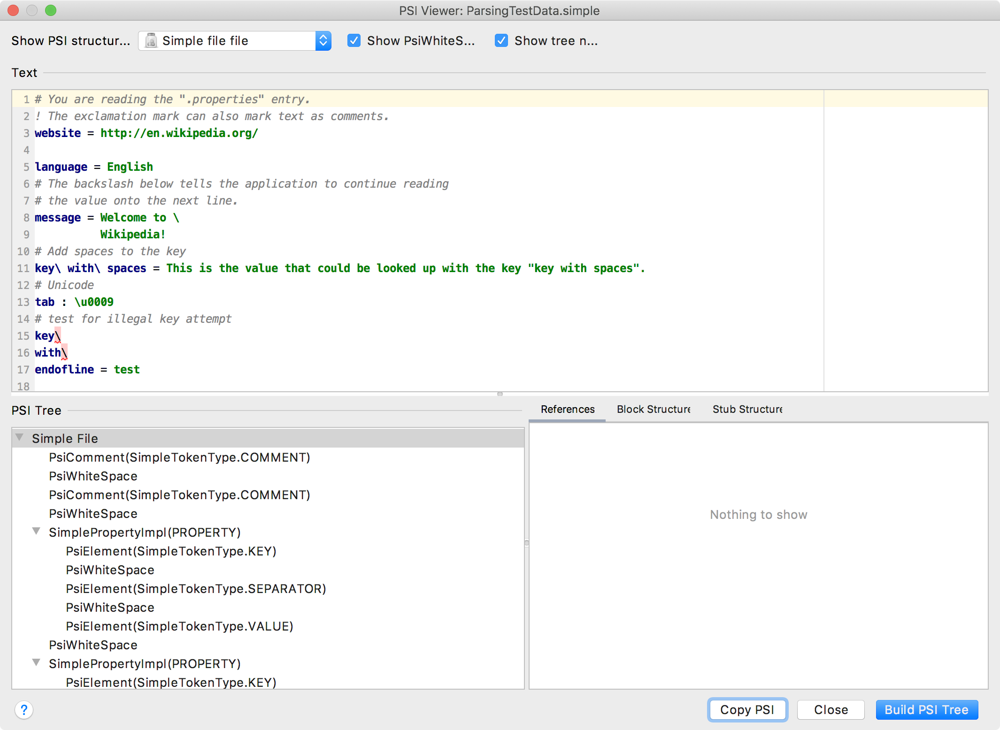

2. Parsing Test
The first test checks if the Simple Language parser, implemented in the Lexer and Parser Definition section of the Custom Language Support Tutorial, works as expected.
2.1. Update Grammar and Regenerate the Parser
Before creating the parsing test, ensure the parser definition (Simple.bnf) includes the lines shown below.
These additional lines facilitate testing incorrect keys.
If the lines below are not present in Simple.bnf, replace the existing property definition with the lines below.
Don’t forget to regenerate the parser after updating the file!
Right-click on the Simple.bnf file and select Generate Parser Code.
property ::= (KEY? SEPARATOR VALUE?) | KEY {
pin=3
recoverWhile="recover_property"
mixin="org.intellij.sdk.language.psi.impl.SimpleNamedElementImpl"
implements="org.intellij.sdk.language.psi.SimpleNamedElement"
methods=[getKey getValue getName setName getNameIdentifier getPresentation]
}
private recover_property ::= !(KEY|SEPARATOR|COMMENT)
2.2. Define Input Test Data
Create the ParsingTestData.simple properties file in the testData folder. Note the last few lines define a purposely incorrect key.
# You are reading the ".properties" entry.
! The exclamation mark can also mark text as comments.
website = http://en.wikipedia.org/
language = English
# The backslash below tells the application to continue reading
# the value onto the next line.
message = Welcome to \
Wikipedia!
# Add spaces to the key
key\ with\ spaces = This is the value that could be looked up with the key "key with spaces".
# Unicode
tab : \u0009
# test for illegal key attempt
key\
with\
endofline = test
2.3. Copy the Expected PSI Tree
The easiest way to get the expected PSI structure for any file is to use the PSI Viewer. Run the project and use Tools | View PSI Structure.

Use the Copy PSI button to copy the expected PSI structure to the clipboard.
2.3. Define the Output Reference Test Data
Create a file ParsingTestData.txt with the copied PSI tree.
Simple File(0,492)
PsiComment(SimpleTokenType.COMMENT)('# You are reading the ".properties" entry.')(0,42)
PsiWhiteSpace('\n')(42,43)
PsiComment(SimpleTokenType.COMMENT)('! The exclamation mark can also mark text as comments.')(43,97)
PsiWhiteSpace('\n')(97,98)
SimplePropertyImpl(PROPERTY)(98,132)
PsiElement(SimpleTokenType.KEY)('website')(98,105)
PsiWhiteSpace(' ')(105,106)
PsiElement(SimpleTokenType.SEPARATOR)('=')(106,107)
PsiWhiteSpace(' ')(107,108)
PsiElement(SimpleTokenType.VALUE)('http://en.wikipedia.org/')(108,132)
PsiWhiteSpace('\n\n')(132,134)
SimplePropertyImpl(PROPERTY)(134,152)
PsiElement(SimpleTokenType.KEY)('language')(134,142)
PsiWhiteSpace(' ')(142,143)
PsiElement(SimpleTokenType.SEPARATOR)('=')(143,144)
PsiWhiteSpace(' ')(144,145)
PsiElement(SimpleTokenType.VALUE)('English')(145,152)
PsiWhiteSpace('\n')(152,153)
PsiComment(SimpleTokenType.COMMENT)('# The backslash below tells the application to continue reading')(153,216)
PsiWhiteSpace('\n')(216,217)
PsiComment(SimpleTokenType.COMMENT)('# the value onto the next line.')(217,248)
PsiWhiteSpace('\n')(248,249)
SimplePropertyImpl(PROPERTY)(249,292)
PsiElement(SimpleTokenType.KEY)('message')(249,256)
PsiWhiteSpace(' ')(256,257)
PsiElement(SimpleTokenType.SEPARATOR)('=')(257,258)
PsiWhiteSpace(' ')(258,259)
PsiElement(SimpleTokenType.VALUE)('Welcome to \\n Wikipedia!')(259,292)
PsiWhiteSpace('\n')(292,293)
PsiComment(SimpleTokenType.COMMENT)('# Add spaces to the key')(293,316)
PsiWhiteSpace('\n')(316,317)
SimplePropertyImpl(PROPERTY)(317,410)
PsiElement(SimpleTokenType.KEY)('key\ with\ spaces')(317,334)
PsiWhiteSpace(' ')(334,335)
PsiElement(SimpleTokenType.SEPARATOR)('=')(335,336)
PsiWhiteSpace(' ')(336,337)
PsiElement(SimpleTokenType.VALUE)('This is the value that could be looked up with the key "key with spaces".')(337,410)
PsiWhiteSpace('\n')(410,411)
PsiComment(SimpleTokenType.COMMENT)('# Unicode')(411,420)
PsiWhiteSpace('\n')(420,421)
SimplePropertyImpl(PROPERTY)(421,433)
PsiElement(SimpleTokenType.KEY)('tab')(421,424)
PsiWhiteSpace(' ')(424,425)
PsiElement(SimpleTokenType.SEPARATOR)(':')(425,426)
PsiWhiteSpace(' ')(426,427)
PsiElement(SimpleTokenType.VALUE)('\u0009')(427,433)
PsiWhiteSpace('\n')(433,434)
PsiComment(SimpleTokenType.COMMENT)('# test for illegal key attempt')(434,464)
PsiWhiteSpace('\n')(464,465)
SimplePropertyImpl(PROPERTY)(465,469)
PsiElement(SimpleTokenType.KEY)('key')(465,468)
PsiErrorElement:SimpleTokenType.SEPARATOR expected, got '\'(468,469)
PsiElement(BAD_CHARACTER)('\')(468,469)
PsiWhiteSpace('\n')(469,470)
SimplePropertyImpl(PROPERTY)(470,475)
PsiElement(SimpleTokenType.KEY)('with')(470,474)
PsiErrorElement:SimpleTokenType.SEPARATOR expected, got '\'(474,475)
PsiElement(BAD_CHARACTER)('\')(474,475)
PsiWhiteSpace('\n')(475,476)
SimplePropertyImpl(PROPERTY)(476,492)
PsiElement(SimpleTokenType.KEY)('endofline')(476,485)
PsiWhiteSpace(' ')(485,486)
PsiElement(SimpleTokenType.SEPARATOR)('=')(486,487)
PsiWhiteSpace(' ')(487,488)
PsiElement(SimpleTokenType.VALUE)('test')(488,492)
2.4. Define a Parsing Test
Subclass ParsingTestCase to create SimpleParsingTest:
Override getTestDataPath(), and return the path from the root of this plugin module to the testData directory.
// Copyright 2000-2020 JetBrains s.r.o. and other contributors. Use of this source code is governed by the Apache 2.0 license that can be found in the LICENSE file.
package org.intellij.sdk.language;
import com.intellij.testFramework.ParsingTestCase;
public class SimpleParsingTest extends ParsingTestCase {
public SimpleParsingTest() {
super("", "simple", new SimpleParserDefinition());
}
public void testParsingTestData() {
doTest(true);
}
/**
*
* @return path to test data file directory relative to root of this module.
*/
@Override
protected String getTestDataPath() {
return "src/test/testData";
}
@Override
protected boolean skipSpaces() {
return false;
}
@Override
protected boolean includeRanges() {
return true;
}
}
2.5. Run the Test
Run the test by:
- Opening the Gradle Tool Window.
- Select the
simple_language_plugin. You may need to reimport it as a Gradle project. - Drill down under
simple_language_pluginto Tasks, verification, test task. - Run the test task.
The results are displayed in the Run Window, and also written to the simple_language_plugin/build/test-results/test/ directory.